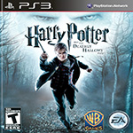
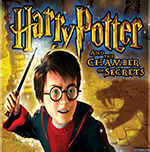

Poudlard
Se connecter |
S'inscrire |
English
Accueil
Jeux en ligne
Jeux pour mobile
Lien Multi-joueurs
Mini-jeux
Jeux de lettres
Nouveaux Jeux
Jeux Populaires

Ordre chronologique de sortie des jeux

Meilleurs ventes
Accueil
Jeux en ligne
Jeux pour mobile
Lien Multi-joueurs
Mini-jeux
Jeux de lettres
© 2015 Guillaume Tremel
Réalisé dans le cadre scolaire de première session au collégial.